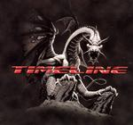

| Artist: | Timeline |
| Title: | Timeline |
| Label: | self produced |
| Length(s): | minutes |
| Year(s) of release: | 2005 |
| Month of review: | [09/2005] |
| 1) | Mirror In The Sky | 4.46 |
| 2) | Redemption | 4.40 |
| 3) | Vertigo | 5.12 |
| 4) | The Burn | 5.09 |
| 5) | Rampage | 3.44 |
| 6) | Journey's End | 6.09 |
| 7) | Heart Of The Storm | 5.24 |
| 8) | Karocell | 4.38 |
| 9) | Borrowed Time | 5.54 |
| 10) | When I Look Into Your Eyes | 4.09 |
Redemption continues the AOR style coupled with elements of Saga and derivatives of AOR such as Timelock (formerly on SI). Notwithstanding a certain amount of variation, this hasty rock track does not convince me, a bit too straightforward. Again, the drum sound isn't too great, although the drummer is the most 'progressive' of the instrumentalists, introducing a lot of variation in the songs.
Vertigo is a lot more proggy with a strong role for the keyboards. Only after a minute or two does the keyboard give its lead to the guitar, but that instrument is not likely to give it up, not until the very end when the keyboards from the beginning come back.
After this fully instrumental tune, we come to The Burn which opens with eerie effects. For the rest it is a track similar to the second one: high pace, lots of energy, the hard rock voice of Eric Boles singing a similar vocal melody which shows a dominance of AOR elements, and a rather muddy overall sound. The main difference is the guitar that has a bit more distortion this time around. At the end we even get a short keyboard solo.
Rampage is again among the more straightforward tunes. Essentially, there is nothing wrong with the composition and the vocal melodies either, although the band does seem to use the same tack on most of their songs. And the vocalist is for me at least, hard to like. But the production tends to spoil a lot of the end result too, which is really too bad, because in this style of music it won't get them a fair chance to get heard. The audience have grown too critical for that.
Journey's End is the longest track on this album, just topping six minutes. The gait is more laid back on this one, although the song is not less heavy than others. The guitar has the leading role, especially in the middle of the song where it soloes extensively. Strangely, the volume drops while we still seem to be in the middle of the solo. This is where the keyboards come in again, always a tell-tale prog sign.
Heart Of The Storm is one of those pacey rock tracks again, this time with some tense intermezzo's which darken up the songs nicely. Strong. Karocell brings us to typically proggy tempo changes and rhythmic variation. Then the music more or less stops, to come back in a more or less plodding waltzy fashion. The keyboards should take the fore here, but they can't gain enough volume to overcome the guitar and drums. After this second instrumental we still have Borrowed Time and When I Look Into Your Eyes to go. The first of these is a rocking track, weak on melodies, but it is energetic enough. The guitar sound reminds me of Rick Ray. The second one opens more slick, which is not by itself a bad thing. But the middle part contains quite a bit of noodling, also on the keyboards.